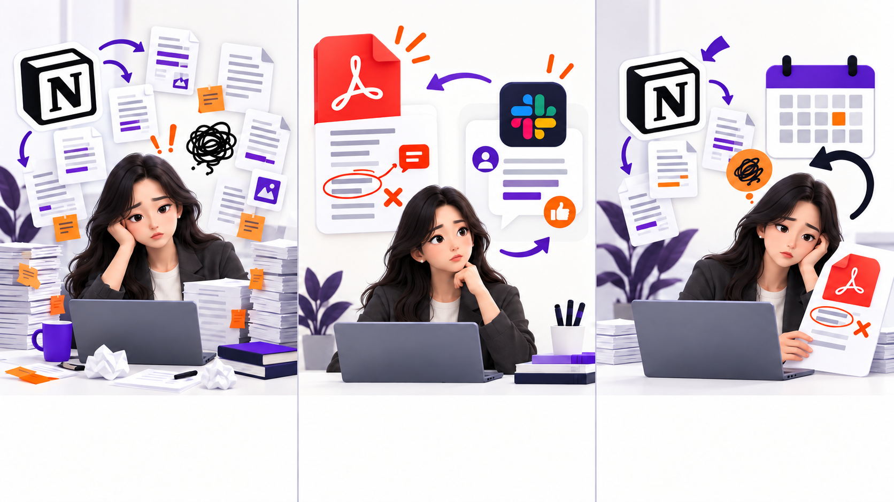

MENTORING
매번 달라지는 피드백에
기준을 만들다
판단 기준을 Skills로 구조화해,
멀티 Agent와 사람 검수로 운영했습니다.
반복 업무에 기준을 남기는 멘토링 Agent 설계YUJIN FLOW
판단 기준을 Skills로 구조화해,
멀티 Agent와 사람 검수로 운영했습니다.
피드백 품질이 매번 달라진 진짜 이유
속도보다 판단 기준을 먼저 바로잡은 이유
기준, 역할별 Agent, Skills, 사람 검수
폴더 구조와 Claude Code 실행 화면
품질 보증 구조와 Plan, Do, See
PDF와 멘트를 매번 새로 만들기 때문에 반복 업무에 시간이 듭니다.
판단 기준, 검수 과정, 수정 이유가 남지 않아 결과가 왜 통과했는지 설명할 수 없습니다.

먼저 원본, 기준, 결과, 기록의 위치를 정했습니다. 이후 Notion, Google Drive, Google Calendar 같은 업무 도구를 연결하면 입력과 실행 흐름을 더 줄일 수 있습니다.
진단 기준과 좋은 예시를 명시합니다.
결과가 만족해야 할 조건을 질문으로 남깁니다.
검수 이유를 다음 실행의 입력으로 저장합니다.
제출물을 확인하고 네 Agent에 작업을 나눈 뒤 결과를 모읍니다.
제출물에서 핵심 신호를 찾습니다.
정해진 구조로 리포트를 만듭니다.
바로 행동할 Slack 멘트를 만듭니다.
산출물의 일치 여부를 확인합니다.
좋은 피드백이라는 추상적인 말 대신, 결과가 어떤 상태면 통과인지 질문으로 바꿨습니다.
PDF와 Slack 멘트가 같은 핵심 문제를 말하는가?
멘티가 다음에 무엇을 할지 바로 알 수 있는가?
PDF는 분석체, 멘트는 자연스러운 대화체인가?
과장, 단정, 개인정보 노출 없이 발송 가능한가?
원본 위치, 판단 기준, 통과 질문을 파일로 정해 같은 출발점을 사용합니다.
Agent와 Skills가 진단, PDF, Slack 멘트를 하나의 흐름으로 만듭니다.
산출물 일치 여부를 검수하고 외부 발송은 사람이 최종 승인합니다.
검수 기록과 수정 이유를 기억층에 남겨 다음 실행의 기준으로 돌려보냅니다.
데이터를 정리하고, 필요한 도구만 연결하고, 작은 업무 하나에서 Plan, Do, See를 반복합니다.
Agent가 매번 다시 묻지 않도록 자료의 역할과 저장 위치를 먼저 정합니다.
멘티 과제가 들어오면 역할별 Agent가 Skills에 따라 작업합니다.
자동 검수와 사람 승인을 거쳐 수정 이유를 다음 실행의 기준으로 남깁니다.